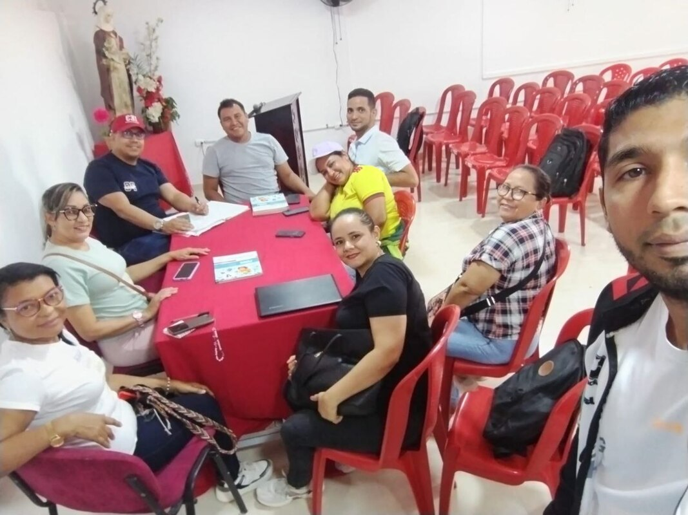

SEMANA INSTITUCIONAL ENERO 2025
Con actividades pensadas para fomentar la colaboración, el aprendizaje y el sentido de pertenencia, esta semana fue una oportunidad para disfrutar, compartir y crecer juntos. Una experiencia orientada a fortalecer la integración y el compromiso con la comunidad educativa.

INICIANDO EL AÑO ESCOLAR 2025
El comienzo del año escolar 2025 es una oportunidad para aprender, no solo en las aulas, sino también en cada experiencia que vivamos. Es tiempo de abrir nuestras mentes a nuevos conocimientos y nuestros corazones a nuevas amistades. Que este año esté lleno de crecimiento personal y académico.
CARNAVAL 2025
En esta fiesta llena de color y ritmo, celebramos la riqueza cultural de nuestro país, fomentando el respeto y la alegría en cada actividad. Que este Carnaval nos inspire a seguir cultivando el espíritu de unidad, trabajo en equipo y el amor por lo que somos.


DIA DE LA MUJER 2025
Hoy celebramos la fuerza, la sabiduría y el amor que las mujeres aportan al mundo. Que cada día sea una oportunidad para reconocer y honrar su invaluable contribución en todas las áreas de la vida. En este 8 de marzo, Día de la Mujer, agradecemos su valentía, su dedicación y su impacto transformador en nuestra sociedad.
LANZAMIENTO DEL PROYECTO PEDAGÓGICO: VIVIENDO EN VALORES
Se realizó con éxito el lanzamiento del proyecto “Viviendo en Valores”, una iniciativa que busca fortalecer la formación ética de los estudiantes mediante la práctica diaria de valores como el respeto, la responsabilidad y la solidaridad. A través de actividades participativas, se promovió la reflexión y el compromiso con una mejor convivencia escolar.

22 DE ABRIL DÍA DE NUESTRO PLANETA TIERRA
Hoy rendimos homenaje a nuestro planeta, fuente de vida, inspiración y equilibrio. Cada 22 de abril nos invita a tomar conciencia sobre la importancia de preservar los recursos naturales y proteger el medio ambiente. En este Día de la Tierra, reafirmamos nuestro compromiso de actuar con responsabilidad, sembrando hoy las acciones que darán frutos de esperanza para las generaciones futuras.

EXPOSICIÓN: MOVIMIENTOS DE LA TIERRA
Durante la jornada académica, los estudiantes realizaron una exposición sobre los movimientos de la Tierra, con el objetivo de comprender los fenómenos astronómicos que influyen en la vida del planeta, como el día y la noche, las estaciones del año y la duración del año solar.
A través de maquetas, carteles y explicaciones orales, los estudiantes demostraron su comprensión sobre la rotación y traslación de la Tierra, fortaleciendo sus habilidades comunicativas, el trabajo en equipo y la expresión oral. La actividad permitió vincular la teoría con la práctica y despertar el interés por las ciencias naturales y el estudio del universo.


RELIEVE COLOMBIANO
Los estudiantes del grado 5° participaron en una jornada de aprendizaje dedicada al estudio del relieve colombiano, con el propósito de reconocer la diversidad geográfica de nuestro país y comprender la importancia de sus principales formaciones naturales.
Durante la actividad, los niños identificaron las tres grandes regiones montañosas del territorio nacional: la cordillera Occidental, la cordillera Central y la cordillera Oriental. También aprendieron sobre los valles, llanuras, sierras y depresiones que conforman el paisaje colombiano.
A través de maquetas, mapas y presentaciones, los estudiantes representaron de forma creativa las diferentes formas del relieve, fortaleciendo sus conocimientos en ciencias sociales y su sentido de pertenencia por el territorio nacional.

DIA DEL NIÑO MAYO 02/2025
El pasado 2 de mayo celebramos con alegría el Día del Niño, una jornada dedicada a reconocer la importancia de la infancia y promover sus derechos. Con juegos, actividades recreativas y momentos llenos de diversión, los estudiantes disfrutaron de un espacio pensado para resaltar su valor y alegría en nuestra comunidad educativa.

ELABORO NEURONAS UTILIZANDO MI CREATIVIDAD – GRADO 5°02
Los estudiantes del grado 5°02 elaboran representaciones de neuronas empleando diferentes materiales y toda su creatividad. A través de esta actividad, reconocen las partes principales de la neurona: cuerpo celular, dendritas y axón, y comprenden su importancia en el funcionamiento del sistema nervioso.
Además, desarrollan habilidades manuales, refuerzan su aprendizaje de ciencias naturales y ponen en práctica la imaginación para crear modelos únicos y coloridos.


CIRCUITOS ELÉCTRICOS – GRADO 5
Los estudiantes del grado 5° participaron en una interesante actividad práctica sobre circuitos eléctricos, con el propósito de comprender cómo se produce, transmite y utiliza la energía eléctrica en la vida cotidiana.
Durante la jornada, los niños elaboraron circuitos simples utilizando pilas, cables y bombillos, observando de manera directa cómo fluye la corriente eléctrica. Esta experiencia les permitió aplicar conceptos básicos de ciencias naturales, desarrollar el pensamiento lógico y fortalecer la curiosidad científica.

COMPARTO MIS EXPERIENCIAS A TRAVÉS DE EXPOSICIONES DEL TEMA MÁQUINAS SIMPLES
En esta actividad, los estudiantes comparten sus experiencias y aprendizajes sobre el tema de las máquinas simples mediante exposiciones creativas y participativas.
A través de maquetas, demostraciones, explicaciones orales y recursos visuales, los estudiantes explican el funcionamiento y la utilidad de palancas, poleas, planos inclinados, entre otros mecanismos. Esta estrategia promueve la expresión oral, el pensamiento científico y el desarrollo de competencias comunicativas.

DÍA DE LA INTELIGENCIA ARTIFICIAL (IA)
Con el propósito de fomentar el conocimiento y la curiosidad por la tecnología, los estudiantes participaron en la conmemoración del Día de la Inteligencia Artificial (IA), una jornada dedicada a explorar cómo la innovación y la ciencia transforman el mundo actual.
Durante la actividad, los estudiantes aprendieron sobre el funcionamiento básico de la inteligencia artificial y sus aplicaciones en la vida cotidiana, como la robótica, los asistentes virtuales y el análisis de datos.
A través de videos, charlas y dinámicas interactivas, se promovió el pensamiento crítico, la creatividad y el uso responsable de la tecnología.

EXPOSICIÓN GRADO 5 – CÉLULAS
En el marco del área de Ciencias Naturales, los estudiantes de grado 5° realizaron una exposición sobre las células, enfocándose en su estructura, tipos y funciones.
A través de maquetas, dibujos, presentaciones orales y materiales didácticos, se explicaron las diferencias entre la célula animal y vegetal, así como la importancia de esta unidad básica de la vida.
La actividad permitió fortalecer habilidades científicas como la observación, la clasificación y la comunicación, promoviendo un aprendizaje activo y colaborativo.
IZADA DE BANDERA – 22 DE MAYO / CONMEMORACIÓN DEL DÍA DE LAS MADRES
Hoy, 22 de mayo, nos reunimos en esta solemne izada de bandera para rendir homenaje a las madres, figuras insustituibles en nuestras vidas y pilares fundamentales de la familia y la sociedad.
En este acto, reconocemos con profundo respeto y gratitud el amor incondicional, la fortaleza, el sacrificio y la dedicación de todas las madres.

TALLER DE COMPRENSIÓN LECTORA EN LA ASIGNATURA DE RELIGIÓN
En este taller de comprensión lectora de la asignatura de Religión, los estudiantes fortalecieron su capacidad para leer, entender y reflexionar sobre textos con mensajes de fe, valores y enseñanzas cristianas.
A través de cuentos bíblicos, actividades dinámicas y preguntas reflexivas, los niños desarrollaron habilidades lectoras mientras aprendían sobre el amor, la solidaridad, el respeto y otros valores importantes para su vida diaria.
PARTICIPACIÓN EN EL FORO EDUCATIVO – SECRETARÍA DE EDUCACIÓN MUNICIPAL
Con el objetivo de fortalecer las competencias comunicativas y promover el pensamiento reflexivo, se participó en el Foro Educativo organizado por la Secretaría de Educación Municipal, cuyo eje temático fue “La lectura crítica en el aula”.
Durante este espacio académico, se compartieron experiencias pedagógicas centradas en estrategias para fomentar la comprensión lectora, el análisis y la interpretación de textos en diferentes contextos.
Esta participación permitió intercambiar saberes entre docentes, reconocer buenas prácticas educativas y reafirmar la importancia de la lectura crítica como herramienta fundamental para el aprendizaje significativo y la formación integral de los estudiantes.

TRABAJO EN EQUIPO DE LOS DOCENTES DE LOS GRADOS 4
Los docentes de los grados 4 nos unimos para fortalecer el trabajo en equipo, buscando siempre la excelencia en nuestra labor educativa.
A través de la colaboración, compartimos conocimientos y nos apoyamos mutuamente para crear un ambiente de aprendizaje positivo y enriquecedor para nuestros estudiantes. El éxito de cada uno de nosotros es el éxito de todos.
DINÁMICA ANTES DE INICIAR LA CLASE
Actividad lúdica y participativa que se realiza al comienzo de la jornada escolar con el propósito de motivar a los estudiantes, generar un ambiente de confianza, promover la integración del grupo y preparar la disposición positiva hacia el aprendizaje.
REUNIÓN DE DOCENTES DE BÁSICA PRIMARIA – SEDES MARÍA EUGENIA, SAN JOSÉ Y LEYDA GARRIDO
Espacio de encuentro académico y pedagógico con los docentes de básica primaria de las sedes María Eugenia, San José y Leyda Garrido, orientado a fortalecer la planeación institucional, socializar estrategias didácticas, analizar procesos de enseñanza-aprendizaje y fomentar el trabajo colaborativo en pro de la calidad educativa.
RULETA DE LAS ESTACIONES
Como parte del fortalecimiento del aprendizaje en ciencias naturales, los estudiantes participaron en la divertida y educativa actividad “Ruleta de las Estaciones”, cuyo objetivo fue reconocer y diferenciar las cuatro estaciones del año: primavera, verano, otoño e invierno.
A través de una ruleta, los niños giraban el tablero y respondían preguntas o realizaban retos relacionados con cada estación: su clima, características y los cambios que ocurren en la naturaleza.
Esta dinámica permitió que los estudiantes aprendieran de forma lúdica, participativa y significativa, reforzando su comprensión sobre los movimientos de la Tierra y sus efectos.

SEGUNDA PRUEBA TRIMESTRAL
La Segunda Prueba Trimestral tiene como objetivo evaluar los contenidos trabajados durante el segundo trimestre del año escolar.
Esta evaluación incluirá preguntas de desarrollo, selección múltiple, verdadero o falso y/o resolución de problemas, según la naturaleza de la asignatura.
Los estudiantes deberán demostrar comprensión, aplicación y análisis de los temas abordados en clases. Es importante prepararse con anticipación, revisar apuntes, guías de estudio y ejercicios realizados previamente.
IZADA DE BANDERA: TEMA LAS VACACIONES
En esta izada de bandera celebraremos el inicio de las vacaciones, un tiempo especial para descansar, compartir en familia, jugar y seguir aprendiendo de manera divertida.
A través de canciones, mensajes y actividades, recordaremos lo importante que es cuidarnos, disfrutar con responsabilidad y aprovechar este tiempo para recargar energías. ¡Felices vacaciones para todos!

BATALLA DE BOYACÁ - 7 DE AGOSTO
En esta actividad conmemorativa del 7 de agosto, los estudiantes conocieron la importancia histórica de la Batalla de Boyacá como hecho clave en la independencia de Colombia.
A través de representaciones artísticas, exposiciones, dramatizaciones y reflexiones en clase, los estudiantes desarrollaron un sentido de identidad nacional, respeto por la historia y reconocimiento a los héroes que lucharon por la libertad del país.
Esta jornada busca fortalecer valores como el patriotismo, la gratitud y el compromiso con la construcción de una sociedad justa y pacífica.

SOCIALIZANDO CON MI FAMILIA EL PERIÓDICO INSTITUCIONAL
Actividad pedagógica y formativa que busca integrar a la familia en el proceso educativo mediante la lectura y análisis del periódico institucional, promoviendo la comunicación, la participación activa y el fortalecimiento de los lazos entre escuela y hogar.

FORTALECIENDO EL PROCESO DE LA LECTURA – GRADO 5
Con el propósito de mejorar la comprensión lectora y fomentar el gusto por la lectura, los estudiantes del grado 5° participaron en diversas actividades orientadas al fortalecimiento del proceso lector.
A través de lecturas guiadas, juegos de palabras, dramatizaciones y análisis de textos, los niños desarrollaron habilidades para interpretar, inferir y expresar sus ideas de manera clara y coherente.
Estas estrategias didácticas permitieron que los estudiantes asumieran la lectura como una experiencia significativa y divertida, fortaleciendo su vocabulario, la fluidez verbal y la capacidad crítica.


PROYECTO: RAÍCES QUE BAILAN – HISTORIA VIVA DEL BULLERENGUE Y LA TAMBORA
Durante la feria de exposición institucional, los estudiantes presentaron el proyecto Raíces que bailan: historia viva del bullerengue y la tambora, una propuesta pedagógica y cultural orientada a rescatar las tradiciones musicales del Caribe colombiano.
A través de danzas y muestras musicales, los estudiantes exploraron los orígenes del bullerengue y la tambora como expresiones de identidad, resistencia y alegría del pueblo afrodescendiente.
La actividad permitió integrar el arte, la historia y la cultura como herramientas de aprendizaje significativo.